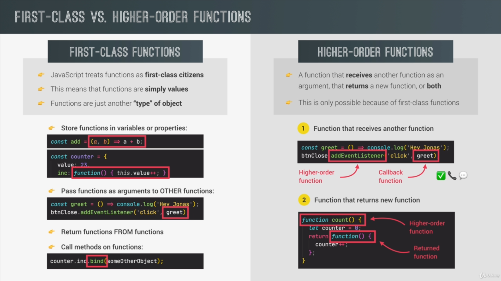

A closer look at Functions
The Bind Method
The bind method returns a new function whose this property is explicitly set to a specific object.
eg : const bookLH = book.bind(lufthansa);
bookLH(723, 'Eddard Stark');
output : Eddard Stark booked a seat on lufthansa flight LH 723
Along with the this property, we can also set parameters of the function in the default method
eg : const bookLH453 = book.bind(lufthansa, 453);
bookLH453('Gregor Clegane');
output : Gregor Clegane booked a seat on lufthansa flight LH 453
The call and Apply Method
The call method helps to set what the this keyword is pointing at for a Function.
eg : book.call
eurowings, 23, 'Atul' ====>
here we set the this keyword explicitly to point at eurowings object first argument
The apply method does the exact same thing but the only difference is that it doesn't recireve a list of arguments
after the this keyword but takes an array of arguments.
eg : const passengerJon = [23, 'Jon Snow'];
book.apply(swiss, passengerJon);
PASSING BY VALUE AND PASSING BY REFERENCE MEANING
Javascript does not have a pass by reference
For objects we do in fact pass IN A reference
so the MEMORY ADDRESS of the object
however that reference is still a value that contains memory address
so we pass the reference to the function but not pass by reference
first class function is a feature that a programming language has or doesn't have i.e.
all functions are values it's a theory not in practice
However there are higher order functions that are supported because the programming language
supports first class functions
